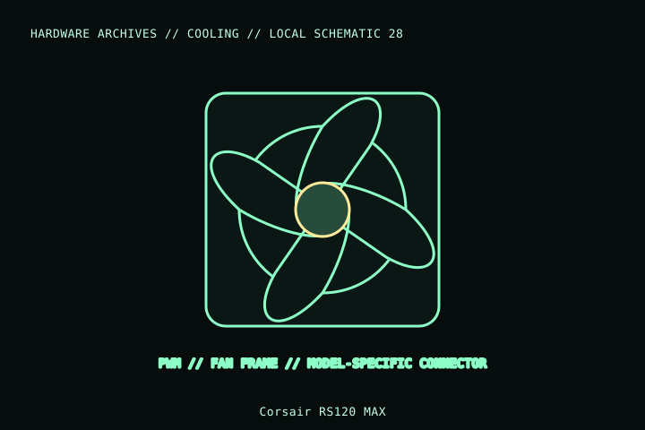

[ INDIVIDUAL COMPONENT // COOLING ]
Corsair RS120 MAX
Corsair RS120 MAX is a 120 mm, 30 mm-thick PWM fan. That extra frame depth is a key fit constraint; distinguish it from the standard-thickness RS120 and RGB variants by full model/SKU.

MODEL IDENTIFICATION: Verify full model, suffix, SKU, generation, connector, and host-support documentation against the physical item. The record describes only the identified model and does not guarantee host compatibility.
Specifications
| Exact identity | RS120 MAX; expansion-fan SKU CO-9051005-WW (verify exact bundle/lighting variation) |
|---|---|
| Frame | 120 × 120 × 30 mm for MAX version; do not substitute 25 mm RS120 dimensions |
| Control | 4-pin PWM fan control on the RS120 MAX standard fan; confirm product suffix and connector in the specific package. |
| Fit | 120 mm mount with 30 mm fan depth; screw engagement, radiator, side panel, and cable clearances are chassis-specific. |
| Host electrical | Check the exact fan current on the product specification and keep all fans within header/controller limits. |
Compatibility and installation
- Measure for the 30 mm fan thickness at the case, radiator, panel, and adjacent cables; use hardware with suitable screw length.
- Connect to a 4-pin PWM-capable controller/header only after checking the exact unit’s pinout and current.
- Do not confuse RS120 MAX with standard RS120/RGB models or assume their dimensions and lighting connections match.
Service notes
Power down before cleaning or moving connectors. Hold blades stationary during dusting; inspect the frame, cable insulation, and mounting screws for wear.
Manufacturer references
- Corsair — RS120 MAXManufacturer page for the RS120 MAX expansion fan and bundle identity.
- Corsair — SupportManufacturer product documents and support.
Model variants and revisions may change specifications or included hardware; the manufacturer’s exact product page/manual and the host manual take precedence.